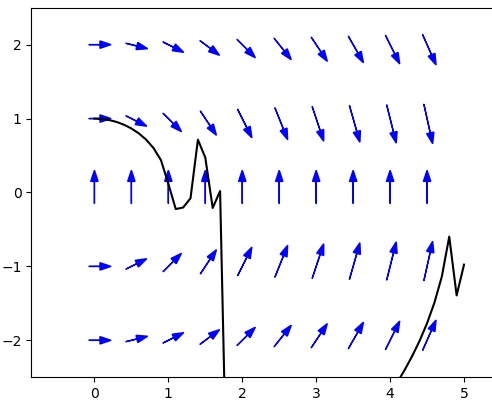

Table of Contents
Geometric Interpretation - Numerical Methods
Euler's Method
So far we have learned some algebraic techniques for solving first order
differential equations of various special forms. We will learn more
techniques in the future, but we will still be restricted to solving just
selected equations of special form. Most first-order equations can't be
solved explicitly, even in integral form. That being the case, it is often
most useful to have a numerical technique to approximate the solution.
We will consider the two simplest numerical methods
for approximating solutions, Euler's method and the improved Euler's
method. These techniques build on the geometric interpretation of
differential equations that we developed in the last lab. We will consider
the example
$$
\frac{dy}{dx}=2x-y,\qquad y(0)=1.
$$
Geometrically, this solution is the curve that follows the arrows of the
slope field and passes through the point (0,1). We can build an
approximation to this curve as follows. Suppose we want to
approximate the value of $y$ at $x=0.1.$ Start at the point (0,1). At this
point the slope is $2\times0-1=-1.$ So our arrow points down with slope
$-1.$
 We follow this arrow as pictured at the left to get
$y(0.1)\approx 1-1\times0.1 = 0.9.$
Since the exact value of $y(0.1)=0.91452\ldots$, this is a reasonably good
approximation.
You might observe that this is exactly the same thing as using the tangent
line approximation from Calculus. And just like the tangent line
approximation, it works reasonably well as long as your target $x$ (in
this case 0.1) is close enough to your starting $x$ (in this case 0). It
breaks down if you try to get too far away from your initial value. For
example, if you try to approximate $y(1)$ using this technique, you get
$y(1)\approx1-1\times1=0$, but the exact value is $y(1)=1.103638\ldots$.
The slope field changes at each point
causing the solution curve to bend instead of just continuing in
the same downward direction of the initial arrow. To deal with the
problem of changing slopes, we need to make many small steps following
each arrow for a short distance and then computing the new slope (the
new arrow), repeating the process until we reach our target value.
We follow this arrow as pictured at the left to get
$y(0.1)\approx 1-1\times0.1 = 0.9.$
Since the exact value of $y(0.1)=0.91452\ldots$, this is a reasonably good
approximation.
You might observe that this is exactly the same thing as using the tangent
line approximation from Calculus. And just like the tangent line
approximation, it works reasonably well as long as your target $x$ (in
this case 0.1) is close enough to your starting $x$ (in this case 0). It
breaks down if you try to get too far away from your initial value. For
example, if you try to approximate $y(1)$ using this technique, you get
$y(1)\approx1-1\times1=0$, but the exact value is $y(1)=1.103638\ldots$.
The slope field changes at each point
causing the solution curve to bend instead of just continuing in
the same downward direction of the initial arrow. To deal with the
problem of changing slopes, we need to make many small steps following
each arrow for a short distance and then computing the new slope (the
new arrow), repeating the process until we reach our target value.
 We call
the horizontal length of each short step the step size in this
process. It will be helpful to introduce some notation as we start
repeating our approximation process for multiple steps. For the
initial value problem
$$
\begin{align}
\frac{dy}{dx}&=f(x,y) \\
y(x_0)=y_0
\end{align}
$$
so the
starting point is $(x_0,y_0)$, we call our step size $h$ and then define
\begin{align}
x_{n+1}&=x_n+h \\
y_{n+1}&=y_n+hf(x_n,y_n)
\end{align}
For example, to approximate $y(0.3)$ using a step size of 0.1 we compute
$$\begin{align}
x_0=0\qquad\qquad y(0)&=y_0=1 \\
x_1=0+0.1=0.1\qquad y(0.1)&\approx y_1=1+0.1(2\times0-1) = 0.9 \\
x_2=0.1+0.1=0.2\qquad y(0.2)&\approx y_2=0.9+0.1(2\times0.1-0.9) = 0.83 \\
x_3=0.2+0.1=0.3\qquad y(0.3)&\approx y_3=0.83+0.1(2\times0.2-0.83) = 0.787
\end{align}
$$
Of course, this sort of repetitive calculation is exactly what computers
were invented to do. Putting 30 small steps with $h=0.1$ together, we get an
approximation to the solution curve between $x=0$ and $x=3$.
We call
the horizontal length of each short step the step size in this
process. It will be helpful to introduce some notation as we start
repeating our approximation process for multiple steps. For the
initial value problem
$$
\begin{align}
\frac{dy}{dx}&=f(x,y) \\
y(x_0)=y_0
\end{align}
$$
so the
starting point is $(x_0,y_0)$, we call our step size $h$ and then define
\begin{align}
x_{n+1}&=x_n+h \\
y_{n+1}&=y_n+hf(x_n,y_n)
\end{align}
For example, to approximate $y(0.3)$ using a step size of 0.1 we compute
$$\begin{align}
x_0=0\qquad\qquad y(0)&=y_0=1 \\
x_1=0+0.1=0.1\qquad y(0.1)&\approx y_1=1+0.1(2\times0-1) = 0.9 \\
x_2=0.1+0.1=0.2\qquad y(0.2)&\approx y_2=0.9+0.1(2\times0.1-0.9) = 0.83 \\
x_3=0.2+0.1=0.3\qquad y(0.3)&\approx y_3=0.83+0.1(2\times0.2-0.83) = 0.787
\end{align}
$$
Of course, this sort of repetitive calculation is exactly what computers
were invented to do. Putting 30 small steps with $h=0.1$ together, we get an
approximation to the solution curve between $x=0$ and $x=3$.
 Euler's method isn't particularly accurate. You can theoretically increase the
accuracy by taking smaller steps, but that means increasing the number of steps
it will take to reach your goal, which may increase the buildup of roundoff error
and will certainly increase the time it takes to run your calculations.
Some extra work getting a more accurate approximation will often pay off.
Euler's method isn't particularly accurate. You can theoretically increase the
accuracy by taking smaller steps, but that means increasing the number of steps
it will take to reach your goal, which may increase the buildup of roundoff error
and will certainly increase the time it takes to run your calculations.
Some extra work getting a more accurate approximation will often pay off.
Practice Problems
A randomly generated practice problem is below. This time there is no detailed solution, just
the numbers, but I think that should be enough.
The Improved Euler Method (Heun's Method)
 So how can we improve our approximation for
$\displaystyle\frac{dy}{dx}=f(x,y)$, $y(x_0)=y_0$? Well what we are
looking for is
not the tangent line to the curve, we are looking for the "secant" line
between the points $(x_0,y(x_0))$ and $(x_1,y(x_1))$. Then the formula for
the secant line is $y(x_1)=y(x_0)+(x_1-x_0)S$ where $S$ is the slope of
the secant line. So how can we approximate the slope of the secant line?
Euler's method uses the slope of the tangent line at the
left endpoint $y'=f(x_0,y(x_0))$ as the approximation to the slope of the
secant line. Geometrically, there is no reason why the left endpoint should give
a better approximation than the slope at the right endpoint,
$y'=f(x_1,y(x_1))$.
In fact, the average of
the slopes of the tangent lines at each endpoints
$$
\frac{f(x_0,y(x_0))+f(x_1,y(x_1))}2
$$
is better still.
Unfortunately, we only know the left endpoint $(x_0,y_0)$; the right
endpoint $(x_1,y(x_1))$ is what we are trying to find (which is why we used
the left endpoint in Euler's method). But once we have
carried out Euler's method, we have an approximation to the right
endpoint, $(x_1,y_1)$. Now we can use this approximation to compute the
approximate slope of the tangent line at the right endpoint
$y'=f(x_1,y_1)$ and then the approximate slope of the secant line
$$
\frac{f(x_0,y_0)+f(x_1,y_1)}2
$$
All those "approximates" in the
last sentence may look scary, but the process is actually fairly
straightforward. For the initial value problem
$$ \frac{dy}{dx}=2x-y,\qquad y(0)=1,$$
we set $x_0=0$ and $y_0=1$ and compute $x_{n+1}=x_n+h$ and
$$
\begin{align}
x_{n+1}&=x_n+h \\
\tilde y_{n+1}&=y_n+h(2x_n-y_n)
\end{align}
$$
as in Euler's method. We then improve our approximation for $y(x_{n+1})$
from $\tilde y_{n+1}$ to
$$
y_{n+1}=y_n+h\left(\frac{(2x_n-y_n)+(2x_{n+1}-\tilde y_{n+1})}{2}\right)
$$
We repeat this procedure as many times as needed to reach our desired
point just as with the original Euler's method. For example, to
approximate $y(0.3)$ using a step size of 0.1 we compute the following
(calculations here have only been reported to 4 decimal places):
$$
\begin{align}
x_1&=0+0.1=0.1 \\
\tilde y_1&=1+.1(2\times0-1)=.9 \\
y_1&=1+.1\left(\frac{(2\times0-1)+(2\times.1-.9)}{2}\right)
=.915 \\
& \\
& \\
x_2&=0.1+0.1=0.2 \\
\tilde y_2&=.915+.1(2\times.1-.915)=.8435 \\
y_2&=.915+.1\left(\frac{(2\times.1-.915)+(2\times.2-.8435)}{2}\right)
=.8571 \\
& \\
& \\
x_3&=0.2+0.1=0.3 \\
\tilde y_3&=.8571+.1(2\times.2-.8571)=.8114 \\
y_3&=.8571+.1\left(\frac{(2\times.2-.8571)+(2\times.3-.8114)}{2}\right)
=.8237
\end{align}
$$
Note that the improved Euler's method is twice as much work
as the original Euler's method, since you do an extra improvement step each row.
So the amount of work to approximate $y(0.3)$ using the improved Euler method
with step-size $h=0.1$ is roughly the same as the work to approximate $y(0.3)$
with a step-size of $h=0.05$ using Euler's method. Now the solution of
the initial value problem
$$\frac{dy}{dx}=2x-y,\qquad y(0)=1$$
is $y=2x-2+3\exp(-x)$, so the true value of $y(0.3)=0.82245466...$. We just
computed that the improved Euler method with step-size 0.1 gives an approximation
of 0.8237, which is an error of just 0.00124534..., or just 0.15%. You can check
that Euler's method with step-size $h=0.05$ gives an approximation of 0.80527567...,
which is an error of 0.01717899..., or about 2.1%. So using the improved Euler
method gives an answer in this case that is more than 10 times as accurate, with
the same amount of work.
So how can we improve our approximation for
$\displaystyle\frac{dy}{dx}=f(x,y)$, $y(x_0)=y_0$? Well what we are
looking for is
not the tangent line to the curve, we are looking for the "secant" line
between the points $(x_0,y(x_0))$ and $(x_1,y(x_1))$. Then the formula for
the secant line is $y(x_1)=y(x_0)+(x_1-x_0)S$ where $S$ is the slope of
the secant line. So how can we approximate the slope of the secant line?
Euler's method uses the slope of the tangent line at the
left endpoint $y'=f(x_0,y(x_0))$ as the approximation to the slope of the
secant line. Geometrically, there is no reason why the left endpoint should give
a better approximation than the slope at the right endpoint,
$y'=f(x_1,y(x_1))$.
In fact, the average of
the slopes of the tangent lines at each endpoints
$$
\frac{f(x_0,y(x_0))+f(x_1,y(x_1))}2
$$
is better still.
Unfortunately, we only know the left endpoint $(x_0,y_0)$; the right
endpoint $(x_1,y(x_1))$ is what we are trying to find (which is why we used
the left endpoint in Euler's method). But once we have
carried out Euler's method, we have an approximation to the right
endpoint, $(x_1,y_1)$. Now we can use this approximation to compute the
approximate slope of the tangent line at the right endpoint
$y'=f(x_1,y_1)$ and then the approximate slope of the secant line
$$
\frac{f(x_0,y_0)+f(x_1,y_1)}2
$$
All those "approximates" in the
last sentence may look scary, but the process is actually fairly
straightforward. For the initial value problem
$$ \frac{dy}{dx}=2x-y,\qquad y(0)=1,$$
we set $x_0=0$ and $y_0=1$ and compute $x_{n+1}=x_n+h$ and
$$
\begin{align}
x_{n+1}&=x_n+h \\
\tilde y_{n+1}&=y_n+h(2x_n-y_n)
\end{align}
$$
as in Euler's method. We then improve our approximation for $y(x_{n+1})$
from $\tilde y_{n+1}$ to
$$
y_{n+1}=y_n+h\left(\frac{(2x_n-y_n)+(2x_{n+1}-\tilde y_{n+1})}{2}\right)
$$
We repeat this procedure as many times as needed to reach our desired
point just as with the original Euler's method. For example, to
approximate $y(0.3)$ using a step size of 0.1 we compute the following
(calculations here have only been reported to 4 decimal places):
$$
\begin{align}
x_1&=0+0.1=0.1 \\
\tilde y_1&=1+.1(2\times0-1)=.9 \\
y_1&=1+.1\left(\frac{(2\times0-1)+(2\times.1-.9)}{2}\right)
=.915 \\
& \\
& \\
x_2&=0.1+0.1=0.2 \\
\tilde y_2&=.915+.1(2\times.1-.915)=.8435 \\
y_2&=.915+.1\left(\frac{(2\times.1-.915)+(2\times.2-.8435)}{2}\right)
=.8571 \\
& \\
& \\
x_3&=0.2+0.1=0.3 \\
\tilde y_3&=.8571+.1(2\times.2-.8571)=.8114 \\
y_3&=.8571+.1\left(\frac{(2\times.2-.8571)+(2\times.3-.8114)}{2}\right)
=.8237
\end{align}
$$
Note that the improved Euler's method is twice as much work
as the original Euler's method, since you do an extra improvement step each row.
So the amount of work to approximate $y(0.3)$ using the improved Euler method
with step-size $h=0.1$ is roughly the same as the work to approximate $y(0.3)$
with a step-size of $h=0.05$ using Euler's method. Now the solution of
the initial value problem
$$\frac{dy}{dx}=2x-y,\qquad y(0)=1$$
is $y=2x-2+3\exp(-x)$, so the true value of $y(0.3)=0.82245466...$. We just
computed that the improved Euler method with step-size 0.1 gives an approximation
of 0.8237, which is an error of just 0.00124534..., or just 0.15%. You can check
that Euler's method with step-size $h=0.05$ gives an approximation of 0.80527567...,
which is an error of 0.01717899..., or about 2.1%. So using the improved Euler
method gives an answer in this case that is more than 10 times as accurate, with
the same amount of work.
Practice Problems
A randomly generated practice problem is below. As with Euler's method, you just
get to see the correct numbers.
How Accurate Are These Methods?
Euler's method uses the tangent line approximation, which means
that the error in each step of size $h$ is approximately $Ch^2$ for
some constant $C$ for $h$ sufficiently small. Remember this gives a bound for the error in each step, but you will
probably need to make many steps, and the errors unfortunately almost always accumulate rather than cancel.
For example, consider the following table showing the error in approximating y(1) for our initial value problem, $y'=2x-y$,
$y(0)=1$, using Euler's method with different step-sizes. Recalling that the solution to this initial value problem
was $y=2x-2+3\exp(-x)$, we have the true value of $y(1)=3\exp(-1)=1.103638...$.
| Step-size $h$ |
Approximation for $y(1)$ |
Error |
| 0.2 |
0.98304000 |
0.12059832 |
| 0.1 |
1.04603532 |
0.05760300 |
| 0.05 |
1.07545777 |
0.02818056 |
| 0.025 |
1.08969732 |
0.01394100 |
| 0.0125 |
1.09670443 |
0.00693389 |
Notice that halving the step-size also roughly cuts the error in half. Because of this, Euler's method is
called a first-order method. This result makes sense intuitively. Since the error in the tangent line approximation
is generally proportional to $h^2$ for small $h$, cutting the step-size in half should cut the error in each step by a
factor of 4. However, cutting the step-size in half doubles the number of steps needed. So the total change in the
error from cutting the step-size in half should be about $1/4 \times 2 = 1/2$, which is what we observe.
We can form a similar table for the Improved Euler method, which is given below.
| Step-size $h$ |
Approximation for $y(1)$ |
Error |
| 0.2 |
1.11221953 |
-0.00858121 |
| 0.1 |
1.10562295 |
-0.00198463 |
| 0.05 |
1.10411587 |
-0.00047754 |
| 0.025 |
1.10375547 |
-0.00011715 |
| 0.0125 |
1.10366734 |
-0.00002901 |
This time, halving the step-size cuts the error by a factor of about 4. It can be shown that
the error in a single step of the Improved Euler method is generally proportional to $h^3$ for
sufficiently small $h$. It follows that cutting the step-size in half should cut the error in
each step by a factor of $(1/2)^3 = 1/8$, while doubling the number of steps. So it makes sense
that the overall error should be cut by a factor of about $1/8 \times 2 = 1/4$ when the step-size
is halved in the Improved Euler method. Since $1/4 = (1/2)^2$, the Improved Euler method is called a
second-order method.
Extensions
It is reasonable to wonder if we might get better results by taking a weighted average of the slopes
at the left and right endpoints in our improvement to Euler's method. It can be shown that the unweighted
average is the unique choice to have the error in a single step be bounded by $Ch^3$ for some constant $C$
for all sufficiently small $h$. There are examples with specific functions in the exercises. The general
proof is actually something you can follow but the algebra gets somewhat involved. You are welcome to
ask me during office hours if you are interested.
If we want to improve our estimate, we will need to pick third point at which to evaluate the slope, and then
take an average of the three individual slopes to approximate the slope of the secant line (and this time, we will
end up using a weighted average). And then you could pick a fourth point and repeat the process.
These ideas lead to techniques called Runge-Kutta methods. The algebra to work out the right points and weights is
rather messy, but fortunately it was all worked out long ago so you can just look up the algorithms now for
third-order, fourth-order, etc. Runge-Kutta methods.
Wikipedia has a good discussion if you are interested.
The trickiest part of using Runge-Kutta methods to approximate the solution of a differential equation is
choosing the right step-size.

Too large a step-size and the error is too large and the approximation is inaccurate.
Too small a step-size and the process will take too long and possibly have too much roundoff error to be accurate.
Furthermore, the appropriate step-size may change during the course of a single problem. Many problems in celestial mechanics,
chemical reaction kinematics, and other areas have long periods of time where nothing much is happening
(and for which large step-sizes are appropriate) mixed in with periods of intense activity where a small step-size is vital.
What we need is an algorithm which includes a method for choosing the appropriate step-size at each step. In addition, remember
that the solution of a differential equation may only exist on a limited interval. But Euler's method and the like will
continue to produce "approximations" even into regions where the solution no longer exists. For example, consider
the graph to the right showing how the improved Euler method with step size $h=0.1$ approximates the solution of
$$
\frac{dy}{dx}=-\frac{x}{y}, \qquad y(0)=1
$$
between $x=0$ and $x=5$.
The true solution is (in implicit form) $x^2+y^2=1$, which means the solution only exists in
the interval $[0,1]$. But the improved Euler method doesn't recognize the solution no longer exists and just keeps
producing more meaningless values. Fehlberg introduced a technique mixing two different Runge-Kutta methods to efficiently
make a dynamic choice of the appropriate step-size. You are
of course also welcome to stop by my office if you have questions or you can find a discussion in the Wikipedia article
linked to earlier.
While the RK(F) techniques are recommended for careful approximations, the methods of this section, besides introducing
the basic ideas, are also useful when you need rough approximations quickly. Being so simple, Euler's method and
the improved Euler's method will run quicker than more accurate techniques. The physics model of many video games
is implemented using these methods. To update the screen 60 times a second, you need to compute the position of
many different objects as quickly as possible. And you just need things to look and feel right to the players;
you don't need precise answers (for example, any error less than one pixel is irrelevant). In this situation,
using Euler's method or the improved Euler's method can be the best choice.
©1994-2026 Andrew G. Bennett